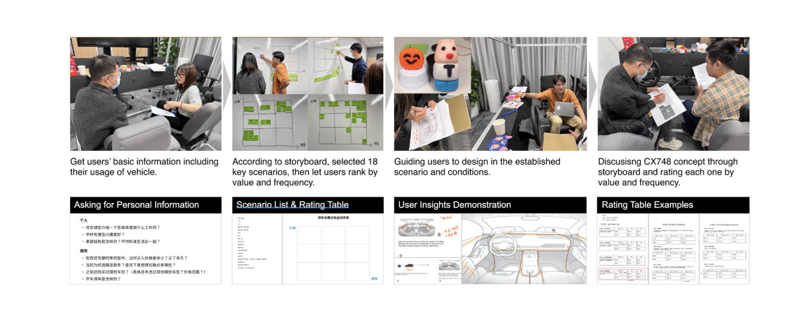

Wonder Island - Creative HMI Launcher
I was lead product designer - Innovation, Story-telling, Wireframe
Do you like customizing your own car? Do you like purchasing skins for your game characters?
Wonder Island is the emotional space on HMI launcher, which provides users with personalized experience and emotional connection.

Problem Statement
We've been designing for a new BEV, inclduing its Halo digital experience and HMI system. I've been leading the Halo exploration to offer digital differentiation and uniqueness for target consumers. (See also 'Digital Life Pod')
- Here are the goals we consider during design:
- User Persona: Generally, our target customers are ladies around 30y, who persue beauty, creation and curation.
- Branding: The product and design should be consistent with our branding.
- Digital Life Pod: The design should follow our design strategy.
- Feasibility and sustainability: The product itself should be feasible during implementation and can continuously create profit for the company.
Work Plan
The design process was held through design sprints. Each sprint had a clear goal and output, guiding our design to run in an agile and outcome-oriented process.
User Research
We conducted in-depth user research, understanding user needs and expectations through interviews. We set-up testing environments with rapid-prototypes of our initial hypothesis, gained insights from our users and co-created for ideas.

Design Insights
We generated several digital Halo themes for our target customer, such as House of Romance and House of beauty. 10+ functions and products were ideated and ready for furthur study.
In this chapter, I'll introduce the Wonder Island, which was agreed to be the most valuable outcome of our exploration.
We found an interesting scene during the design sprints, most of our target users are keen on decorations in their cars, including exterior, interior and all kinds of toys.
Since all the hardwares can be decorated and personalized, why can't the digital space adjust to user's needs?
We defined that we should include a 'personalized' and curation' space in the infotainment system.
As a product that needs to meet marketing and benifit requirements, we created experience map, covering different touch points during user's lifecycle with our vehicle.
Through desktop research (e.g. games, cell phones and OTAs) and user interviews, we finalized it together with marketing and branding teams.
Design Implementation
This is how our HMI looks like:
It consists of a cluster and a 27 inch infotainment screen on the right.
Regarding ergonomics, the right side of the screen is unreachable by the driver while a perfect spot for visulization and interaction with co-pilot.
Therefore, we decide to put a personalization spot there.
The design language of our system is named as 'constellation', which is described as a wonder space in the universe. Unlike any known constellation, our space is filled with imagination and possibilities, seeking for a mysterious experience for the users.
Through co-creations with visual designers, we designed the personalization spot to be 'Wonder Island'. It consistes of 5 elements, the wonder, the life, the time (date) and the island.
Then we started to making stories to make the island more vivid. Every elements was given a name and a unique 'skill'. Some skills are relevant to the surrounding environment, some may reflect the vehicle status, and some can be interacted by user's actions.
Then we started visualizing the concept. Wireframes and 3D elements were created, as well as animations.
The wireframes include steps for users to customize or gain new elements. A typical journey may include user entering edit mode, select elements or gain new elements, preview the final outcome and save her work.
(Due to confidential requirements, detailed files are not shown.)
Market Acceptance Research
After we generated visuals and prototypes, we attented the vehicles Market Acceptance Research. This is the research that we make sure the vehicle's appearance and Halo experience are well accepted by the market. A quantitative research with more than 200 users were done. And qualitiative research was followed to hear more from the users.
The research gave us positive feedback, 4+ points were given (5 in total) when users were asked if they like this feature. And during qualitative research, we were also glad to hear that users might slightly raise their attempt to buy the car with the 'Wonder Island' feature.